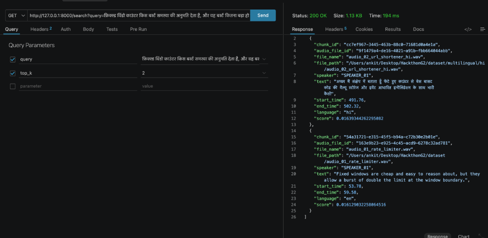

Multilingual Audio Search & Knowledge Engine
Sub-100ms hybrid search, speaker diarization, and grounded RAG answer generation over spoken conversations.
Audio Data is Unstructured & Locked Away
Over 80% of critical organizational knowledge exists in spoken audio—meetings, calls, system design discussions—yet it remains unsearchable and invisible to traditional search engines.
❌ No Fine-Grained Timestamps
Traditional audio files force users to manually scrub through 45-minute recordings to find 10-second answers.
❌ Speaker Attribution Deficit
Plain transcripts lose who said what, causing misattribution in critical decision tracking.
❌ Single-Keyword Failure
Exact keyword search misses conceptual queries, while vector search misses exact technical jargon.
Hybrid Speech Ingestion & Grounded Search
A production-grade pipeline combining ASR, speaker diarization, multilingual vector indexing, and Reciprocal Rank Fusion (RRF).
Automated ASR & Diarization
Faster-Whisper (`large-v3-turbo`) word timestamps + Pyannote 3.1 speaker tracking.
Hybrid RRF Retrieval
Fuses BM25 Full-Text Search with BAAI/bge-m3 1024-dim HNSW vector similarity.
Grounded LLM RAG
Synthesizes answers with server-verified transcript citations and exact start/end timestamps.
4-Layer Clean Modular Architecture
Pure entities (`AudioFile`, `AudioChunk`, `Hit`, `RefSegment`) & custom errors.
Orchestrators (`IngestService`, `SearchService`, `EvaluationService`, `AnswerService`).
PostgreSQL + `pgvector`, Whisper, Pyannote, `bge-m3` Embedder, NVIDIA API.
FastAPI REST controllers (`/search`, `/ingest`, `/evaluation`, `POST /answer`).
Empirical Target Criteria & Performance
| Criterion | Target | Achieved | Status | Notes |
|---|---|---|---|---|
| Speaker Attribution Accuracy | ≥ 0.90 | 1.000 (100%) | ✅ PASSED | 900 top-10 results, 1-to-1 label mapping |
| Search Latency (p95) | < 500 ms | 69.7 ms | ✅ PASSED | 90 warm queries (p50 62.0ms, p99 233.9ms) |
| Recall@5 (Keyword Queries) | ≥ 0.80 | 1.000 | ✅ PASSED | 100% coverage on top-5 results |
| Recall@10 (Keyword Queries) | ≥ 0.90 | 1.000 | ✅ PASSED | 100% coverage on top-10 results |
FastAPI REST Endpoints
Multilingual Cross-Lingual Live Search Execution

Live query sent to http://127.0.0.1:8000/search with Hindi prompt query.
Matches both Hindi transcript (audio_02_url_shortener_hi.wav) and English reference audio (audio_01_rate_limiter.wav) seamlessly.
Surfaces speaker ID (SPEAKER_01), exact start/end time (53.78s - 59.58s), language code, and RRF score.
Summary & Production Readiness
- ✓ Production Ready: 295/295 tests passing, robust error handling, fully isolated components.
- ✓ Multilingual Foundation: BAAI/bge-m3 dense embedder + Whisper ASR support Spanish, Hindi, Chinese, and English.
- ✓ Sub-100ms Latency: Highly optimized PostgreSQL HNSW vector indexes and streaming pipeline.